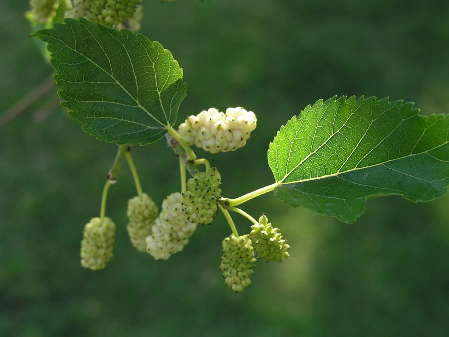

शहतूतWhite Mulberry
Morus alba · Moraceae · FLR-0041

- Scientific name
- Morus alba L.
- Family
- Moraceae
- Hindi
- शहतूत
- Status here
- cultivated
- IUCN
- not evaluated
When to look कब देखें
Expected mainly in February, March, April, May, June, July, August, September, October, November.
शहतूत / White Mulberry
Morus alba L. — Moraceae
शहतूत — उत्तर प्रदेश के ग्रामीण और शहरी क्षेत्रों में उगाया जाने वाला एक मध्यम आकार का पर्णपाती (deciduous) पेड़ है। यह मूल रूप से चीन का मूल निवासी है, लेकिन भारत में रेशम उत्पादन (sericulture) के लिए हजारों वर्षों से इसकी खेती (cultivated) की जा रही है। इसके पत्ते बड़े, कोमल और विभिन्न आकृतियों (अक्सर लोब्ड) के होते हैं, जो रेशम के कीड़ों (Bombyx mori) का मुख्य भोजन हैं। वसंत ऋतु (फरवरी-मार्च) में इसमें हरे रंग की बारीक मंजरी (catkins) आती हैं, जो मार्च-मई तक मीठे, रसदार फलों में बदल जाती हैं। फल शुरू में हरे, फिर सफेद-गुलाबी और पकने पर गहरे बैंगनी-काले रंग के हो जाते हैं। यह पेड़ बगीचे में पक्षियों को आकर्षित करने के लिए लगाया जाता है और इसकी छाल व पत्तियों का उपयोग पारंपरिक उपचारों में किया जाता है।
Quick Identification त्वरित पहचान
| Feature | Description |
|---|---|
| Form | Small to medium-sized deciduous tree (10–15 m); canopy is rounded and highly branched |
| Leaves | Alternately arranged, broad, ovate, with serrated margins; shape is highly variable (can be unlobed or deeply 3-to-5 lobed on the same branch) |
| Flowers | Tiny, unisexual green flowers arranged in dangling cylindrical clusters (catkins) |
| Fruit | Multiple fruit (syncarp) made of fleshy druplets; green-white when young, turning pinkish-red to dark purple-black when ripe |
| Bark | Dark greyish-brown, with vertical fissures; yields milky latex (sap) when cut |
| Twig | Slender, brownish, with prominent lenticels and crescent-shaped leaf scars |
Field tip: Look for a tree with leaves of multiple shapes (some simple oval, some deeply lobed like hands) on the same branch. In spring, it is easily identified by the sweet, cylindrical berries scattered on the ground under its canopy.
Morphology आकारिकी
Biometrics (typical measurements for specimens cultivated in eastern UP plains):
| Feature | Measurement |
|---|---|
| Tree height | 10–15 m |
| Leaf length | 5–15 cm |
| Leaf width | 4–10 cm |
| Flower diameter | 2–3 mm (individual flower) / Catkin length: 1–3 cm |
| Fruit dimensions | 10–25 mm length; 5–8 mm diameter |
Leaves: Smooth and bright green above, slightly paler and hairless below except along the main veins. The leaf margins are serrated, and the leaf base is heart-shaped (cordate) or rounded. The petiole is 2–4 cm long, secreting a small amount of white latex when broken.
Flowers: Wind-pollinated. Male catkins are loose and drooping, 2–3 cm long. Female catkins are shorter and denser, 1–2 cm long, with small styles that catch wind-blown pollen.
Fruit: A fleshy compound fruit (syncarp) composed of numerous individual drupes surrounded by fleshy sepals. The fruit is highly sweet, juicy, and lacks a hard seed.
Associated Species / Interactions सहजीवी संबंध
Insect and bird host.
- Silkworm host: Morus alba is the primary, indispensable food host for the domesticated silkworm (Bombyx mori). The caterpillars feed exclusively on the leaves to produce silk cocoons.
- Frugivorous birds: The sweet ripe berries are a major attractant for local birds, including
[BRD-0006 Common Myna], Red-vented Bulbuls ([BRD-0035]relative), Rose-ringed Parakeets ([BRD-0028]relative), and Jungle Babblers ([BRD-0035 Jungle Babbler]). - Nesting cavities: Mature mulberry trees often develop hollows and soft decaying wood, which are used as nesting cavities by hole-nesting birds and bats. The Asian Palm Swift (
[BRD-0042 Asian Palm Swift]) has been observed nesting in dense foliage clusters.
Life Cycle / Phenology जीवन चक्र
- Leaf fall: Sheds all its leaves during the cold winter months (December–January), entering a state of dormancy to conserve moisture.
- Bud burst & Flowering: New bright green leaves emerge in early spring (February), followed immediately by the appearance of green catkin flowers.
- Fruiting: Fruits develop rapidly during March, ripening from green-white to sweet purple-black in April–May.
- Vegetative growth: Produces dense foliage throughout the hot summer and monsoon months (June–October), providing heavy shade.
Pests and Diseases कीट और रोग
- Mustard Aphids & Mealybugs: Sucking pests often attack young shoots and leaf undersides during spring, causing leaf curling.
- Powdery Mildew: A fungal disease (Phyllactinia guttata) that forms a white powdery coating on leaves during the humid post-monsoon months (September–October), reducing leaf quality for silkworms.
- Stem Borers: Beetle larvae tunnel into the trunk of older trees, causing branch dieback.
Agricultural / Human Relevance कृषि प्रासंगिकता
Economic sericulture and agroforestry.
- Sericulture industry: Cultivated in specialized plots across UP to support rural silk weaving industries. The leaves are harvested systematically to feed silkworm larvae reared in indoor bamboo trays.
- Fodder and timber: The leaves are highly nutritious fodder for goats and dairy cattle, increasing milk yield. The wood is tough, elastic, and traditionally used to manufacture sports goods (cricket bats, hockey sticks) and agricultural tool handles.
Traditional and Ethnobotanical Use
- Digestive fruit: Ripe fruits are eaten fresh to improve digestion, treat throat infections, and relieve constipation. In villages, they are made into a seasonal syrup (shahtoot ka sharbat) to prevent heatstroke during the hot summer wind (loo).
- Medicinal bark: The root bark decoction is used in traditional medicine as an anthelmintic (to expel intestinal worms) and to lower blood pressure.
- Leaf therapy: Warm leaves coated with mustard oil are applied externally onto painful joints and boils to reduce swelling and inflammation.
Expected Locally स्थानीय रूप से अपेक्षित
Not a field record. Written from published accounts for eastern Uttar Pradesh. No confirmed local sighting yet — if you have seen it, that is what the atlas needs.
अभी तक स्थानीय पुष्टि नहीं। यह विवरण प्रकाशित स्रोतों से है, किसी अवलोकन से नहीं।
Commonly planted in home gardens and along field borders in Harraiya and Vikramjot blocks of Basti district. Small household-scale sericulture units exist in select rural areas. During March–April, children can be seen shaking the branches of roadside trees to collect the sweet falling berries.
Distribution वितरण
Global range: Native to temperate and subtropical regions of China. It has been cultivated globally for millennia and is now naturalized across Asia, Europe, Africa, and North America.
In India: Cultivated throughout all states, particularly common in Jammu and Kashmir, Punjab, Uttar Pradesh, West Bengal, and Karnataka.
In Uttar Pradesh: Present in all plain districts as a common garden and roadside tree.
In Basti district / eastern UP: Cultivated resident; found in homesteads and agricultural borders.
Research Questions शोध प्रश्न
- How does the growth rate of Bombyx mori silkworms differ when fed on local Morus alba leaves compared to imported commercial varieties? / स्थानीय शहतूत की पत्तियों को खाने पर रेशम के कीड़ों के विकास दर में क्या अंतर आता है?
- What is the diversity of frugivorous birds visiting Morus alba trees during the peak fruiting month of April in Basti? / अप्रैल में शहतूत के पेड़ पर फल खाने आने वाले पक्षियों की प्रजातियों की विविधता क्या है?
- Does the presence of pruning frequency of Morus alba affect the nutritional content of the leaves for goat fodder?
- How effective is the traditional leaf-compress method in reducing joint pain compared to modern topical gels?
- Can school children plant a mulberry cutting and track how many days it takes to sprout its first new hand-shaped leaf? — A simple propagation and botanical tracking activity.
Similar Species मिलती-जुलती प्रजातियाँ
| Species | Key Difference | हिंदी |
|---|---|---|
| Morus indica (Indian Mulberry) | Smaller tree or shrub; leaves are smaller, always deeply serrated with long pointed tips; fruit is smaller and acidic; native to India. | देशी शहतूत — छोटा फल, खट्टा-मीठा स्वाद |
| Morus nigra (Black Mulberry) | Leaves are consistently large, rough, and hairy on both sides (not smooth); fruit is larger and highly staining; less common in Basti. | काला शहतूत — खुरदरे पत्ते, बड़ा फल |
| Ficus carica (Common Fig) | Leaves are much larger and thicker, always deeply lobed; fruits are large, hollow, pear-shaped figs; yields abundant thick latex. | अंजीर — बड़े खुरदरे पत्ते, फल गोल-नाशपाती आकार |
Taxonomy & Classification वर्गीकरण
Original description. Carl Linnaeus described the White Mulberry as Morus alba in 1753 in his foundational Species Plantarum (Vol. 2, p. 986). The type locality was China. The genus name Morus is the classical Latin name for the mulberry tree. The specific name alba is Latin for "white," referring to the pale colour of the fruits in some varieties.
Subspecies. Multiple cultivars and varieties exist in UP, with Morus alba var. alba being the most widely planted for sericulture.
Family and order placement. Placed in the order Rosales, family Moraceae. The family Moraceae (mulberry family) is characterised by the presence of milky latex and compound fruits.
Phylogenetic notes. The genus Morus contains approximately 10–15 species. Molecular phylogenetics shows that Morus alba is closely related to other Asian mulberries, but has undergone intense selection and hybridization over 4,000 years of sericulture history.
IUCN status rationale. Not evaluated (NE) by the IUCN Red List. As a globally cultivated economic crop species with stable populations, it faces no conservation threats.
Photo Gallery फोटो गैलरी
References संदर्भ
- Linnaeus, C. (1753). Species Plantarum. Laurentii Salvii, Holmiae, Vol. 2, p. 986. [original description]
- Brandis, D. (1906). Indian Trees. Archibald Constable & Co., London.
- Hooker, J. D. (1888). The Flora of British India. Vol. 5. L. Reeve & Co., London.
- Datta, R. K. (2000). Mulberry cultivation and sericulture in India. Sericologia, 40(1), 1–15.
- Botanical Survey of India. State Flora Series: Flora of Uttar Pradesh. BSI, Kolkata.
- GBIF Occurrence Data — Morus alba, South Asia (2026). GBIF taxon key: 5361889.
Source file: species/flora/trees/white_mulberry.md